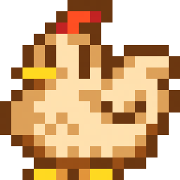
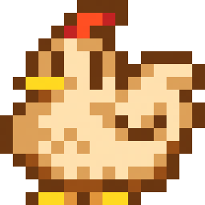

Hades 2 Arrebata Críticos e Fãs em Seu Acesso Antecipado, Prometendo Consolidar a Franquia como Referência no Gênero
A esperada sequência "Hades 2" já é um sucesso estrondoso em acesso antecipado. Com aclamação da crítica e da comunidade, o título da Supergiant Games impressiona pela jogabilidade profunda e narrativa cativante. Isso solidifica a franquia no topo dos roguelikes e eleva as expectativas para seu lançamento completo.